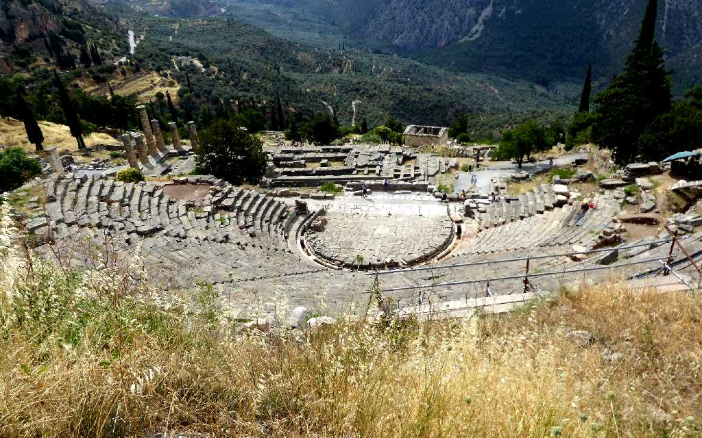
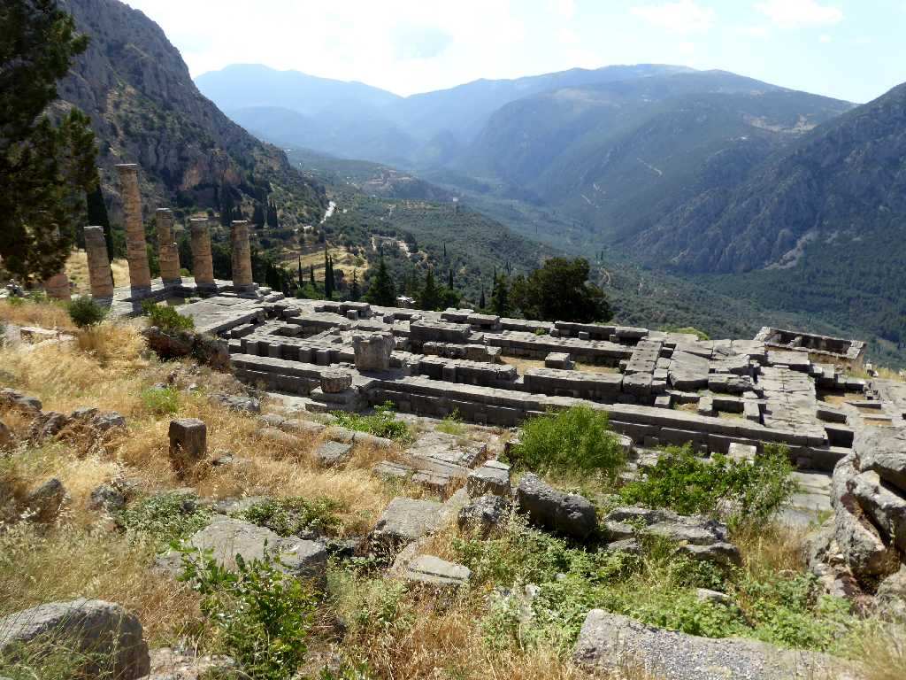
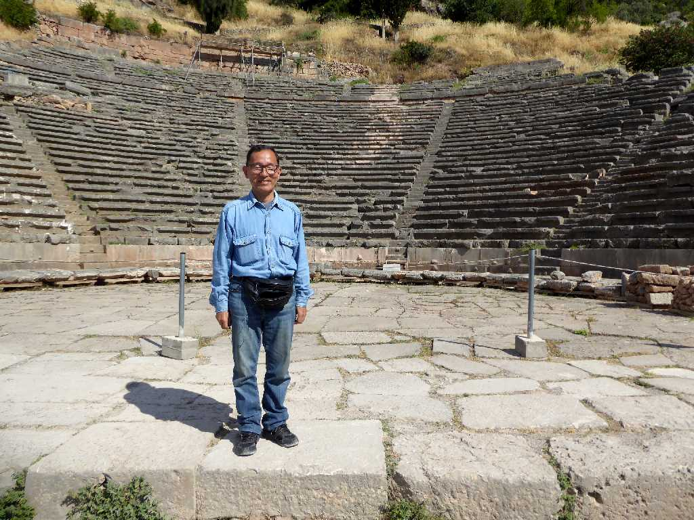
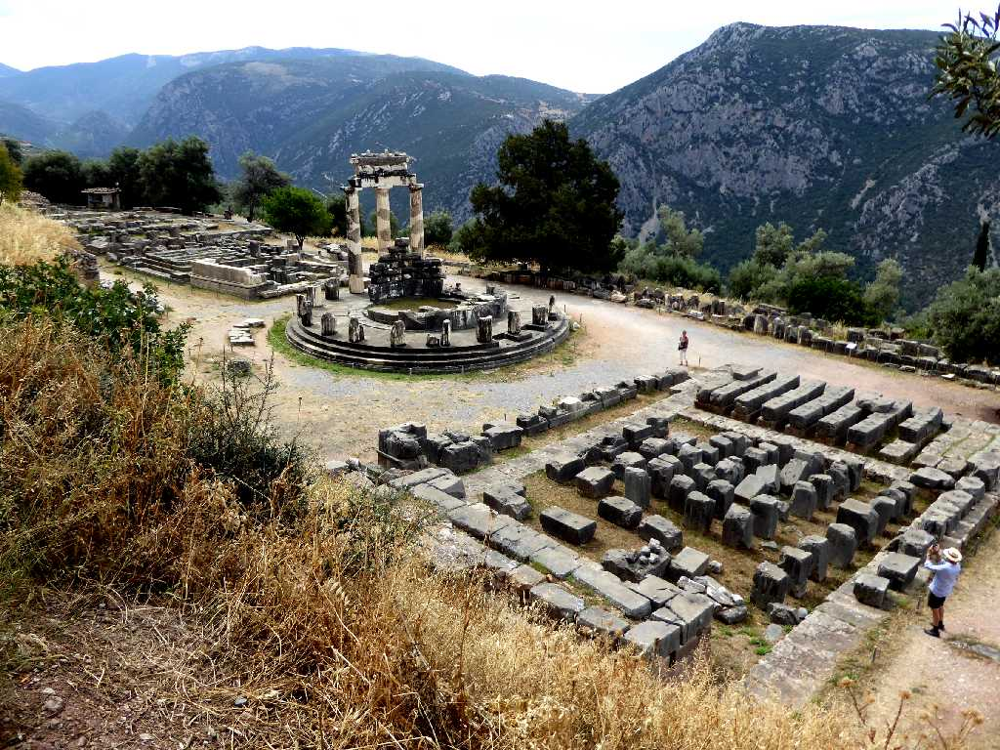
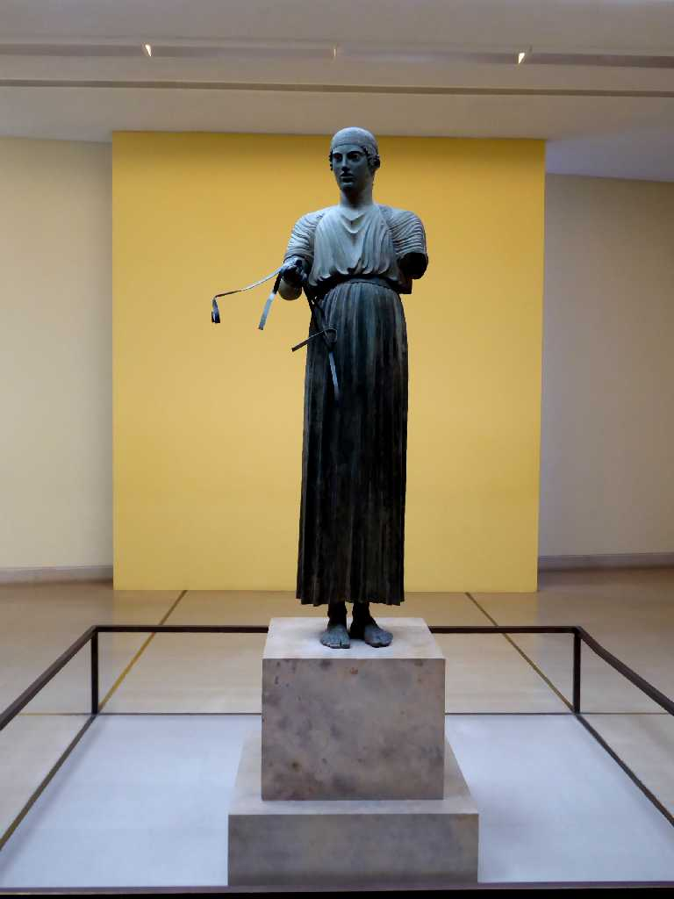

Delphi
紀元前２０世紀頃から創られ始めたと考えられている古代ギリシャの聖域デルポイは古代ギリシャ世界の中心として多くの都市国家ポリスがここに参じて政治外交の指針を神託に求めた

Temple of Apollo Delphi
古代ギリシャで最も神聖な太陽神アポロの神殿 デルポイの神託とは 汝自身を知れ 過剰の中の無(過ぎたるは猶及ばざるが如し 多くを求めるな) 誓約と破滅は紙一重(無理な誓いはするな)

June 15 2018 Theater Delphi
Delphi

Athena Pronaia Sanctuary Delphi

Charioteer Delphi Archaeological Museum
(二輪戦車を制御する)御者